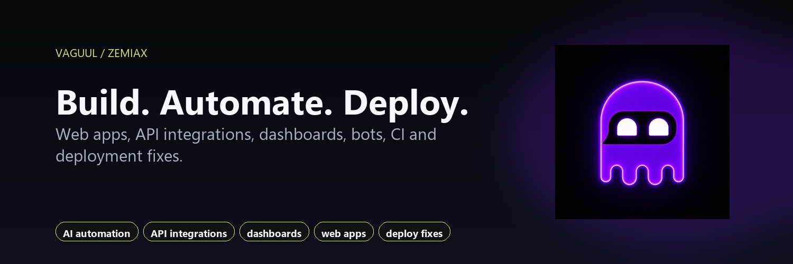

Independent developer · Mexico
Vaguul
I build automation, Discord and Telegram tooling, and self-hosted applications under Zemiax.

Open source
Selected tools
discord-command-controlsShared command, role, and channel policies for Discord bots and dashboards.TypeScript
compose-config-env-lintCLI checks for environment interpolation mistakes in Docker Compose configurations.TypeScript / CLI
social-feed-inputsNormalize supported social inputs into predictable feed and API URLs.TypeScript
coolify-stack-startersDocker Compose starters with configuration checks, healthchecks, and deployment notes.Docker / templates
codex-account-switcher-windows PreviewIndependent Windows utility for manual account switching with encrypted local profiles. Unsigned preview; check compatibility before use.C# / WPF
Also available: oss-maintainer-snapshot and dark-founder-portfolio.
Zemiax
Product development
These product repositories are private. The descriptions below are areas of development, not a claim that every feature is publicly released.
- ZemiaxPanel
- Operations panel for providers, clients, payments, tickets, and administration.
- ZemiaxPay
- Payment collection and checkout workflows.
- Daebor Discord
- Discord platform with a dashboard, API, workers, billing, and server controls.
- Daebor Telegram
- Telegram bot tooling, group management, and automation.
- LubuMail / LubuMail Mobile
- Mail administration, webmail, and mobile-client development.
- LubuHost
- Control plane for projects, hosting, clients, and operations.
- ZemiaxTweaks
- Windows tooling with licensing, update validation, and support workflows.
Merged work
Selected contributions
Contact
Have a specific problem to solve?
API integrations, automation, bots, dashboards, bug fixes, and self-hosted deployments. Send the scope, current behavior, and expected result.